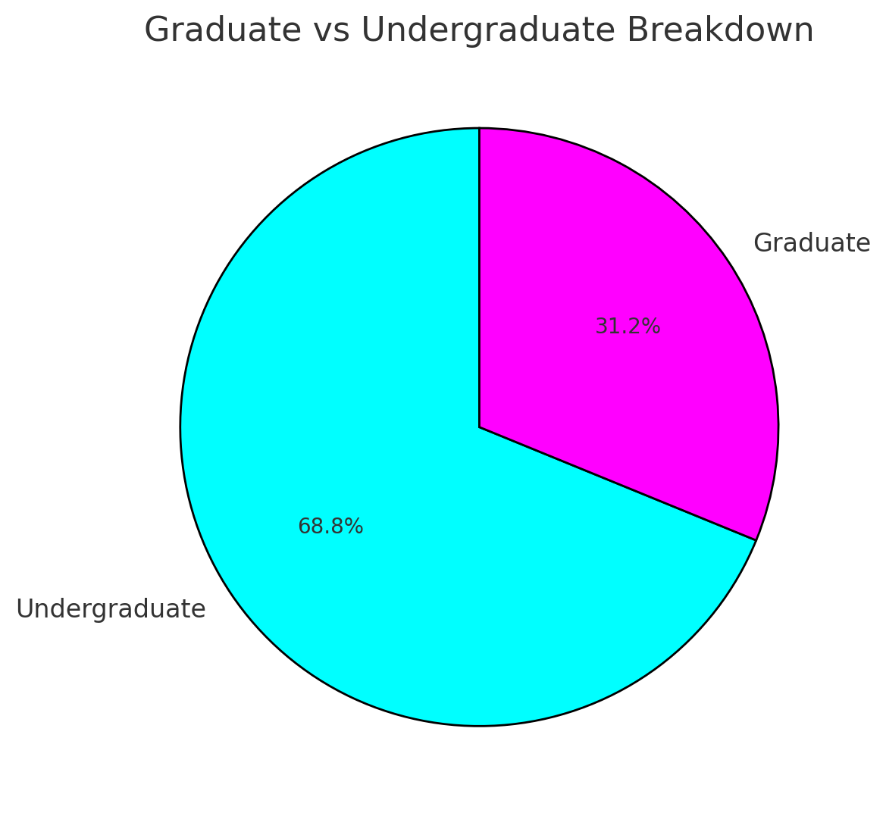
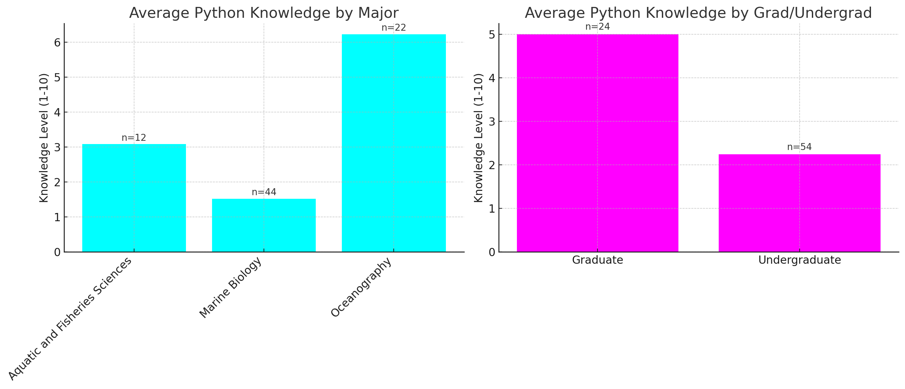

2. Survey Results#
2.1. Introduction#
This textbook and its associated course are part of an active research effort aimed at describing and understanding the current state of marine computer vision (CV) knowledge and education. To gain deeper insights into the knowledge levels and interests of students in this field, we surveyed the University of Washington’s (UW) marine science student body. This report presents the findings from that survey and provides a clearer understanding of how familiar students are with marine imagery and computer vision.
2.2. Survey Methodology#
An interest form was exclusively distributed to marine science undergraduate and graduate students at the University of Washington. The form gathered information about their major/department affiliation, student status (graduate or undergraduate), knowledge of marine imagery, and familiarity and interest in computer vision as it relates to marine imagery.
2.2.1. Survey Goals#
The survey aimed to accomplish the following:
Understand familiarity: Determine how well students are acquainted with marine imagery data collection at UW and other scientific institutions.
Assess technical knowledge: Evaluate students’ self-reported knowledge of computer vision techniques.
Gauge interest: Identify the level of interest in applying computer vision to marine imagery and the possibility of offering a dedicated course on this topic.
2.2.2. Target Audience#
The survey targeted students from the University of Washington, primarily those affiliated with departments such as Oceanography, Aquatic and Fisheries Sciences, Marine Biology, and related marine science fields. Both undergraduate and graduate students were encouraged to participate.
2.2.3. Data Collection#
The survey included a mix of multiple-choice questions, rating scales from 1 to 10, and open-ended fields regarding academic backgrounds. The responses were collected over a specified period, and the data was analyzed to generate insights into students’ knowledge, familiarity, and interest in marine imagery and computer vision. In all the survey had 97 participants.
2.3. Distribution of Majors/Departments by Student Status#
Below is a table that outlines the distribution of respondents by their major or department, further categorized by graduate and undergraduate student status:
Major/Department Affiliation |
Graduate |
Undergraduate |
|---|---|---|
Aquatic and Fisheries Sciences |
10 |
2 |
Aquatic and Fisheries Sciences, Environmental Science |
0 |
1 |
Aquatic and Fisheries Sciences, SMEA |
1 |
0 |
Biology (any option) |
0 |
1 |
Marine Biology |
3 |
37 |
2.4. Visualizations of Survey Responses#

The pie chart highlights the proportion of graduate and undergraduate students who participated in the survey.

The histogram shows how familiar respondents are with marine imagery data collection, with ratings ranging from 1 to 10.

This histogram represents the self-reported knowledge of computer vision rated from 1 to 10.

In addition to visualizing Python knowledge across all respondents, further analysis was conducted to compare Python skills by major and between undergraduate and graduate students. The bar graph above shows that students from Marine Biology, Oceanography, and Aquatic and Fisheries Sciences reported varying levels of Python proficiency, with Marine Biology having the highest number of respondents but relatively low Python knowledge on average.
Graduate students tended to report higher Python proficiency compared to undergraduates, though both groups showed a wide range of experience.

This histogram represents the self-reported knowledge of computer vision, providing insights into the technical background of the respondents.

The final histogram presents respondents’ interest in enrolling in a marine computer vision course, rated from 1 to 10.
2.5. Statistical Analysis: Interest in Marine CV Course and Knowledge in Python and Computer Vision#
To further investigate the relationship between students’ interest in taking a Marine CV course and their knowledge of Computer Vision and Python, we performed a comparison between two groups: those with high interest (rating > 7) and those with lower interest (rating ≤ 7).

2.5.1. Statistical Significance#
Computer Vision Knowledge: A t-test comparing the knowledge of Computer Vision between the two groups resulted in a p-value of 0.053. Although students with higher interest showed greater knowledge in Computer Vision, this difference is not statistically significant at the 95% confidence level.
Python Programming Knowledge: The t-test for Python knowledge yielded a p-value of 0.007, indicating a statistically significant difference. Students with greater interest in the Marine CV course had significantly higher knowledge of Python compared to those with lower interest.
2.6. Interpretation of the Data#
From the data, it is clear that while there is moderate interest in applying computer vision to marine imagery, the overall knowledge of computer vision and programming, particularly in Python, remains relatively low. This justifies the need for this textbook and its associated course, which aims to bridge the gap in technical knowledge and introduce these powerful tools in marine science.
2.6.1. Missing Subset of Students#
These results also highlight an important consideration: we may be missing a subset of students who are interested in Marine CV but feel intimidated by the programming requirements, particularly Python. The low level of Python knowledge among many respondents suggests that there may be a barrier to entry for students who would otherwise be eager to engage with computer vision in marine science but lack the necessary programming background.
This further justifies the inclusion of detailed descriptions and step-by-step explanations for each process in the textbook, ensuring that students from diverse backgrounds can successfully engage with and apply computer vision techniques to their work in marine imagery. By providing accessible and comprehensive materials, the course and textbook will serve as foundational resources for increasing the technical competence of students and preparing them for further advanced studies or professional applications of computer vision in marine science.